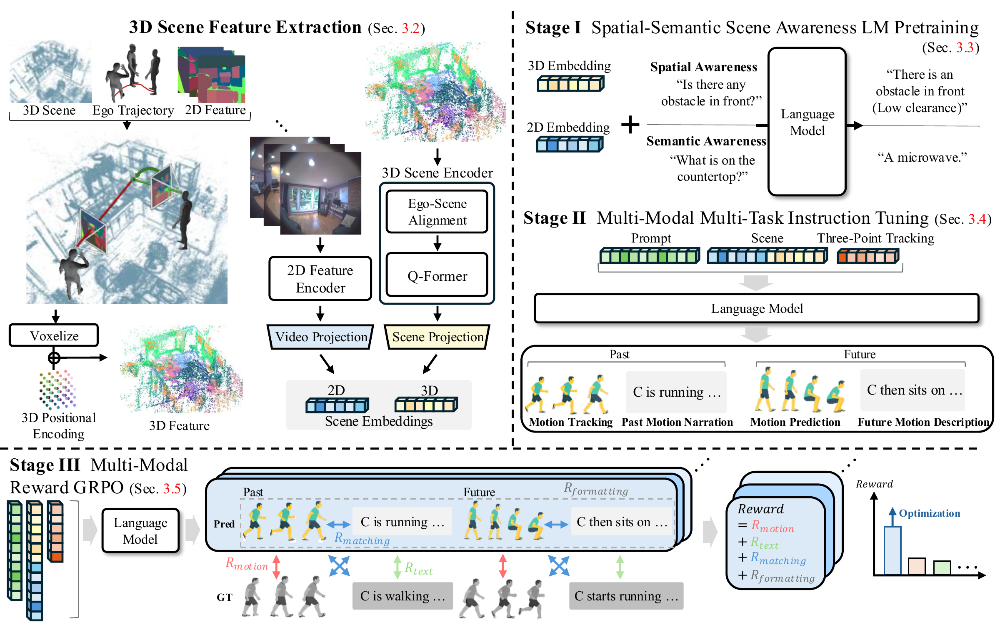
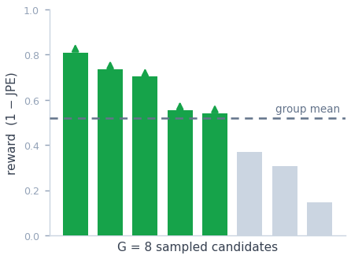

Anticipating human motion from an egocentric perspective is fundamental for proactive assistance in AR/VR, human–robot collaboration, and embodied AI. While recent works incorporate language as a semantic prior to reduce the ill-posed nature of egocentric forecasting, they largely neglect the 3D spatial and semantic context that governs how motion unfolds, and treat pose and language prediction as separate inference streams.
We introduce Ego3DLM, built on two core principles: accurate motion forecasting requires explicit spatial and semantic understanding of the 3D environment, and pose and language must be predicted holistically in a single pass, since motion is inherently tied to the semantic interpretation of actions being performed. Given three-point tracking, 3D scene features, and egocentric video, Ego3DLM simultaneously decodes past pose, future pose, past narration, and future narration in a single autoregressive pass, grounding predicted poses and descriptions in one another to enforce cross-modal and temporal consistency.
We adopt a three-stage training scheme: (1) spatial-semantic scene awareness pretraining; (2) holistic instruction tuning over all four outputs in a single pass; and (3) GRPO-based reinforcement finetuning with intra- and inter-modal rewards that directly optimize pose-language fidelity. Experiments on the Nymeria benchmark demonstrate that Ego3DLM achieves state-of-the-art performance across future motion prediction, past motion tracking, and motion description, showing that 3D scene grounding and holistic cross-modal prediction yield physically plausible and semantically coherent motion forecasts.
Accurate motion forecasting demands explicit spatial and semantic understanding of the 3D environment — the physical constraints, free space, and object-level affordances that govern possible movements.
Pose and language are predicted together in one autoregressive pass, since human motion is inherently tied to the semantic interpretation of the actions being performed.
Given three-point tracking, 3D scene features, and egocentric video, Ego3DLM decodes all four outputs — past pose, future pose, past narration, future description — in a single autoregressive pass, trained in three stages.

The three training stages are detailed below.
Before any motion reasoning, we ground the language model in the 3D environment — pretraining on automatically generated spatial and semantic question–answer pairs so it acquires obstacle awareness and object-level semantics.
We automatically construct the scene-awareness QA dataset — approximately 535K spatial and 115K semantic QA pairs across 208 scenes — augmenting Nymeria, which lacks explicit scene descriptions.
Browse egocentric frames and the automatically generated question–answer pairs grounded in them. Pick a scene and filter by QA type (object, place, color, object nature, …).
Open QA browser in full screen
Directional clearance in the front/left/right sectors — low, mid, high — with the most navigable direction highlighted. The scene points that limit each direction are highlighted in that sector's colour, so you can see exactly what makes it blocked or open. Drag to orbit.
The scene-aware model is instruction-tuned to generate all four outputs in a single autoregressive pass. An explicit spatial-reasoning step is prepended, so spatial understanding propagates through pose prediction and into language — jointly enforcing spatial, temporal, and semantic consistency.
■ past & ■ future motion, ■ narration — predicted jointly on one sample, so pose and language stay mutually consistent.
A reinforcement stage — Group Relative Policy Optimization — directly optimizes what likelihood training cannot: the cross-modal coherence between the simultaneously generated poses and descriptions.

each candidate scores differently — those above the group-relative mean are pushed up (↑), the rest down; ↻ no separate value network needed.
On the Nymeria benchmark, Ego3DLM achieves state-of-the-art performance across future motion prediction, past motion tracking, and motion description.
Motion prediction and tracking. Best results in bold; arrows denote the better direction.
| Method | Motion Prediction (3 modes) | Motion Tracking | |||||||||||
|---|---|---|---|---|---|---|---|---|---|---|---|---|---|
| APE↓ | JPE↓ | ADE↓ | ADE2s↓ | FDE↓ | FDE2s↓ | FID↓ | Div.↑ | APE↓ | Upper↓ | Lower↓ | J.A.↓ | Root↓ | |
| FIction | 206.2 | 564.7 | 558.3 | 416.7 | 904.3 | 494.9 | 0.3275 | 0.7432 | 181.1 | 114.0 | 282.3 | 31.28 | 34.81 |
| EgoLM (GT motion) | 168.8 | 583.9 | 540.0 | 299.0 | 1,059.5 | 494.8 | 1.3840 | 0.0055 | – | – | – | – | – |
| EgoLM (Inst. tuning) | 184.9 | 579.4 | 552.6 | 329.9 | 983.6 | 519.2 | 0.2137 | 0.6142 | 161.9 | 95.6 | 265.6 | 33.63 | 24.01 |
| UniEgoMotion | 151.5 | 424.3 | 409.7 | 223.9 | 720.5 | 360.4 | 0.1530 | 0.9022 | 152.2 | 79.4 | 233.3 | 26.48 | 22.71 |
| Ours (Ego3DLM) | 147.9 | 364.5 | 343.9 | 205.9 | 648.1 | 312.6 | 0.0160 | 1.0624 | 96.4 | 53.1 | 152.7 | 22.30 | 19.57 |
Motion description and narration. x-y Align. denotes motion–text alignment distance (dpp).
| Method | Future Motion Description | Past Motion Narration | x-y Align.↓ |
||||||||||
|---|---|---|---|---|---|---|---|---|---|---|---|---|---|
| Bleu-4↑ | Bleu-1↑ | RougeL↑ | SBert↑ | R@3↑ | dpg↓ | Bleu-4↑ | Bleu-1↑ | RougeL↑ | SBert↑ | R@3↑ | dpg↓ | ||
| LLM (Qwen 2.5 7B) | 0.0202 | 0.0970 | 0.2343 | 0.6120 | 0.1940 | 6.6730 | 0.0232 | 0.1477 | 0.2267 | 0.6183 | 0.1944 | 6.9648 | – |
| EgoLM (Inst. tuning) | – | – | – | – | – | – | 0.0649 | 0.3002 | 0.2642 | 0.5900 | 0.2639 | 6.8992 | 9.8686 |
| Ours (Ego3DLM) | 0.1039 | 0.3839 | 0.3004 | 0.6206 | 0.2911 | 6.3507 | 0.1107 | 0.3966 | 0.3195 | 0.6458 | 0.4264 | 4.9470 | 4.2571 |
Ego3DLM produces motion that conforms to both physical scene constraints and past context, while its simultaneously generated description faithfully reflects the predicted motion. Explore it interactively below: drag to orbit, right-drag to pan, scroll to zoom. Switch scenes, toggle each method, flip between forecasting and tracking, and scrub the timeline. Ground truth is grey; Ours (Ego3DLM) tracks it closely while baselines drift.
@inproceedings{bae2026ego3dlm,
title = {Ego-Human Motion Prediction with 3D-Aware LLM},
author = {Bae, Yujin and Jeong, Jaewoo and Kim, Hyeonseong and Yoon, Kuk-Jin},
booktitle = {Proceedings of the European Conference on Computer Vision (ECCV)},
year = {2026}
}